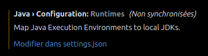

Documentation de Java et des outils de développement Java¶
Table des matières¶
- Documentation de Java et des outils de développement Java
Java¶
Installation de Java - Linux¶
La dernière version LTS (Long terme support) de Java est la 17, je conseille donc d'installer la version 17. La version du jdk et du jre doit être la même, sinon il y aura des problèmes de compatibilité.
-
Installer les paquets du dépot
apt:sudo apt install openjdk-<version>-jdk openjdk-<version>-jre -
pour vérifier la version et l'installation de java :
java --version
Réparer l'erreur de JDK introuvable sur Visual Studio Code (vs code) - Linux¶
-
Éditer le fichier
.bashrc:code /home/${USER}/.bashrc -
Ajouter les lignes suivantes à la fin du fichier
.bashrc:- Dans mon cas le chemin vers le JDK est
/usr/lib/jvm/java-17-openjdk-amd64
# Ajout de la variable JAVA_HOME pour vs code export JAVA_HOME='<path to jdk>' export PATH="${PATH}:${JAVA_HOME}/bin" - Dans mon cas le chemin vers le JDK est
-
Mettre à jour le fichier
.bashrc:source /home/${USER}/.bashrc -
Fermer puis réouvrir vs code
- Aller dans les paramètres de vs code
- Rechercher "
java runtime" - Vous devrier voir '
Java › Configuration: Runtimes' -
Cliquer sur '
Modifier dans setting.json'
-
Ajouter la valeur de java home dans le fichier
settings.jsoncomme montrer ci-dessous :... "git.autofetch": true, "git.confirmSync": false, "workbench.colorTheme": "GitHub Dark Perso", "java.jdt.ls.java.home": "<add JAVA_HOME here>", "explorer.confirmDelete": false, "java.configuration.runtimes": [ { "name": "JavaSE-17", "path": "<add JAVA_HOME here>", "default": true } ], "diffEditor.ignoreTrimWhitespace": false, ...-
Dans mon cas :
... "git.autofetch": true, "git.confirmSync": false, "workbench.colorTheme": "GitHub Dark Perso", "java.jdt.ls.java.home": "/usr/lib/jvm/java-17-openjdk-amd64", "explorer.confirmDelete": false, "java.configuration.runtimes": [ { "name": "JavaSE-17", "path": "/usr/lib/jvm/java-17-openjdk-amd64", "default": true } ], "diffEditor.ignoreTrimWhitespace": false, ...
-
Maven¶
Installation de Maven - Linux¶
-
Installer le paquet du dépot
apt:sudo apt install maven
Utilisation de Maven¶
-
Créer un projet Maven
mvn archetype:generate -DgroupId=<groupId> -DartifactId=<artifactId> -DarchetypeArtifactId=maven-archetype-quickstart -DinteractiveMode=false<groupId>: package du projet, par exemplecom.mycompany.app<artifactId>: nom du projet, par exemplemy-app- Dans l'exemple ci-dessus le projet sera créer dans le dossier
my-app. Dans ce dossier il y aura le fichierpom.xmlet un dossiersrcqui contiendra un dossiermain/java/com/mycompany/appqui contiendra un fichierApp.javaet un dossiertest/java/com/mycompany/appqui contiendra un fichierAppTest.java.
-
Compiler le projet :
mvn clean install -
Pour compiler et déployer le projet sur un serveur Wildfly (préalablement lancé) :
mvn package wildfly:deploy
Wildfly¶
Installation de Wildfly - Linux¶
- Télécharger le fichier tar.gz disponible sur : > https://www.wildfly.org/downloads/
-
Extraire le fichier tar.gz dans le dossier
/optsudo tar -xf wildfly-*.Final.tar.gz -C /opt
Suppressions de la sécurité SSL de Java pour Wildfly - Linux¶
Pour que Wildfly puisse se connecter à une base de données ancienne qui utilise un protocole de sécurité obsolète, il faut supprimé le protocole utilisé par la base de la liste des protocoles de sécurité interdit de Java.
Dans mon cas, la base de données utilise l'algorithme SSLv1, donc je vais le supprimer ainsi que tout les algorithmes SSL de version supérieur présent dans la liste.
Je ne peux pas utiliser la méthode System.setProperty(); car il semblerait que Wildfly ne prenne pas en compte les changements de propriétés système après le lancement du serveur.
Je suis donc obliger de modifier directement le fichier de configuration de Java.
- Pour ce faire allez dans le fichier
/etc/java-17-openjdk/security/java.security - Rechercher la ligne
jdk.tls.disabledAlgorithms= - Supprimer
SSLv1et tout les SSL de version supérieur de la liste des algorithmes interdits
Attention, il existe deux autres listes d'algorithmes interdits :
jdk.jar.disabledAlgorithmsjdk.certpath.disabledAlgorithms
si votre algorithmes est dans l'une de ces listes ou les deux, il faut normalement aussi le supprimer.
- Ajouter le paramètre
"-Djsse.enableCBCProtection=false"dans la ligne de commande pour lancer le serveur (Obligatoire)
Suppressions de la sécurité SSL de Java pour Wildfly - Windows¶
- ouvrir un powershell ou un cmd en administrateur (Obligatoire)
- aller dans le dossier 'security' de java :
cd "path\to\jdk\conf\security"dans mon cascd "C:\Program Files\Java\jdk-17.0.3.7-hotspot\conf\security" - ouvrir le fichier 'java.security' :
notepad java.security - Rechercher la ligne
jdk.tls.disabledAlgorithms= - Supprimer
SSLv1et tout les SSL de version supérieur de la liste des algorithmes interdits - Ajouter le paramètre
"-Djsse.enableCBCProtection=false"dans la ligne de commande pour lancer le serveur (Obligatoire)
Lancement de Wildfly - Linux¶
- aller dans le dossier bin de Wildfly qui se trouve normalement dans
/opt/wildfly-<version>.Final/bindans mon cas/opt/wildfly-27.0.1.Final/bin - lancer la commande :
./standalone.sh -b=192.168.1.223 -DruntimeEnvironment=portable -DpathServerConfig=path/to/serveur.config.xml -b: permet de spécifier l'adresse ip du serveur dans mon cas :192.168.1.223-DruntimeEnvironment: permet de spécifier l'environnement d'exécution du serveurdev: Serveur de développement de l'entrepriseprod: Serveur de production de l'entrepriseportable: Serveur sur mon pc portable
-DpathServerConfig: permet de spécifier le chemin vers le fichier de configuration du serveur, c'est dans ce fichier que seront les informations sur la base de données (adresse IP, numéro de port et nom de la base)- Dans mon cas :
/OS/Mon_Drive/IUT/TP/s4/stage/SuiviProblemes/ServerHTTP/Server/src/main/resources/serveur.config.xml
- Dans mon cas :
Lancement de Wildfly - Windows¶
- aller dans le dossier bin de Wildfly qui se trouve normalement dans
C:\wildfly-<version>.Final\bindans mon casC:\wildfly-27.0.1.Final\bin - lancer la commande :
.\standalone.bat -b="192.168.1.223" "-Djsse.enableCBCProtection=false" - DruntimeEnvironment="dev" -DpathServerConfig="C:\Mon_Drive\IUT\TP\s4\stage\SuiviProblemes\ServerHTTP\Server\src\main\resources\serveur.config.xml" -b: permet de spécifier l'adresse ip du serveur dans mon cas :192.168.1.223-DruntimeEnvironment: permet de spécifier l'environnement d'exécution du serveurdev: Serveur de développement de l'entrepriseprod: Serveur de production de l'entrepriseportable: Serveur sur mon pc portable
-DpathServerConfig: permet de spécifier le chemin vers le fichier de configuration du serveur, c'est dans ce fichier que seront les informations sur la base de données (adresse IP, numéro de port et nom de la base)
Licence¶
Copyright (C) 2024 Floris Robart
Authors: Floris Robart
This program is free software; you can redistribute it and/or modify it under the terms of the GNU Lesser General Public License as published by the Free Software Foundation; either version 2.1 of the License, or (at your option) any later version.
This program is distributed in the hope that it will be useful, but WITHOUT ANY WARRANTY; without even the implied warranty of MERCHANTABILITY or FITNESS FOR A PARTICULAR PURPOSE. See the GNU Lesser General Public License for more details.
You should have received a copy of the GNU Lesser General Public License along with this program; if not, write to the Free Software Foundation, Inc., 51 Franklin Street, Fifth Floor, Boston MA 02110-1301, USA.